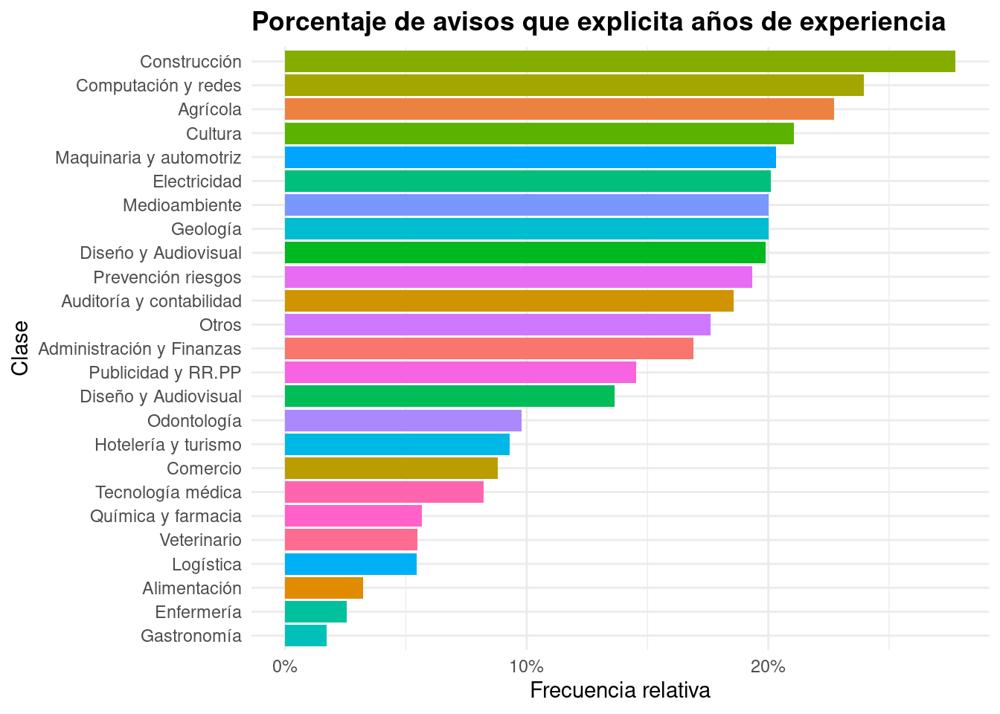

2 Análisis varios
En esta sección exploramos los datos contenidos en las ofertas laborales de laborum.cl y trabajando.cl. El primer portal es mayor, con 50.925 avisos activos en la fecha de descarga. El segundo contiene 30.900 avisos activos1. Hay que considerar, sin embargo, que los datos de trabajando.cl fueron filtrados según nivel educacional requerido, lo cual explica, en parte, el desbalance entre la cantidad de avisos analizados para cada sitio.

2.1 Formato de empleo
La mayor parte de los avisos ofrece una jornada laboral completa, seguidos por aquellos que ofrecen trabajo por turnos. La proporción de trabajos Part Time está en torno al 4%.
Respecto a la modalidad, más de la mitad de las ofertas son para trabajo presencial, y un 10% para modalidad mixta, es decir, teletrabajo y presencial. 5% de las ofertas son para trabajo remoto.

2.2 Ubicación
Aproximadamente el 70% de las ofertas son para la región Metropolitana. Le siguen Antofagasta, Valparaíso, y Biobío. El resto de regiones concentra menos del 30% de las ofertas.

En cuanto a las comunas, las que ofrecen más trabajo son Santiago (16.2%), Las Condes (11%), y Providencia (7.6%). Por la naturaleza de los datos, puede que exista ambiguedades sobre el nivel de referencia, como sucede con Santiago (comuna) y Santiago de Chile (provincia); es decir, comunas y provincias con el mismo nombre fueron contadas por separado.

2.3 Sueldo
Mientras que algunos avisos de trabajando.cl indicaban el monto ofrecido, en el caso de laborum.cl utilizaban tres tipologías: sueldos hasta, rango de suelgo, y sueldos desde. En el primer caso se usó el máximo, en el segundo caso el promedio, y en el último caso el mínimo señalado. Para aquellos casos donde se contó con un sueldo indicado o estimado, el rango salarial más común es $400.000 CLP - $500.000 CLP.

2.4 Años de experiencia
Las ofertas en las categorías Construcción y Computación y Redes son las que más especifican años de experiencia previa. El gráfico abajo ordena las áreas ocupacionales de acuerdo a la proporción que indica requerimientos de experiencia.

Entre aquellas categorías que explicitan años de experiencia2, Geología y Medioambiente requieren en promedio 3,5 años, el número más alto entre nuestras categorías. Avisos que solicitaban un mínimo de meses de experiencia no fueron incluidos en la estimación.

2.5 Estudios mínimos
Este apartado incluye sólo datos de trabajando.cl. La mayor parte de los avisos solicita unos estudios mínimos de nivel universitario. Le sigue el nivel de técnico profesional superior, y luego el de técnico nivel medio. Niveles de postgrado no cuentan con mayor frecuencia. Hay que considerar que, por petición del solicitante, eliminamos del análisis los niveles de Doctorado, así como aquellos niveles educacionales inferiores al técnico medio.